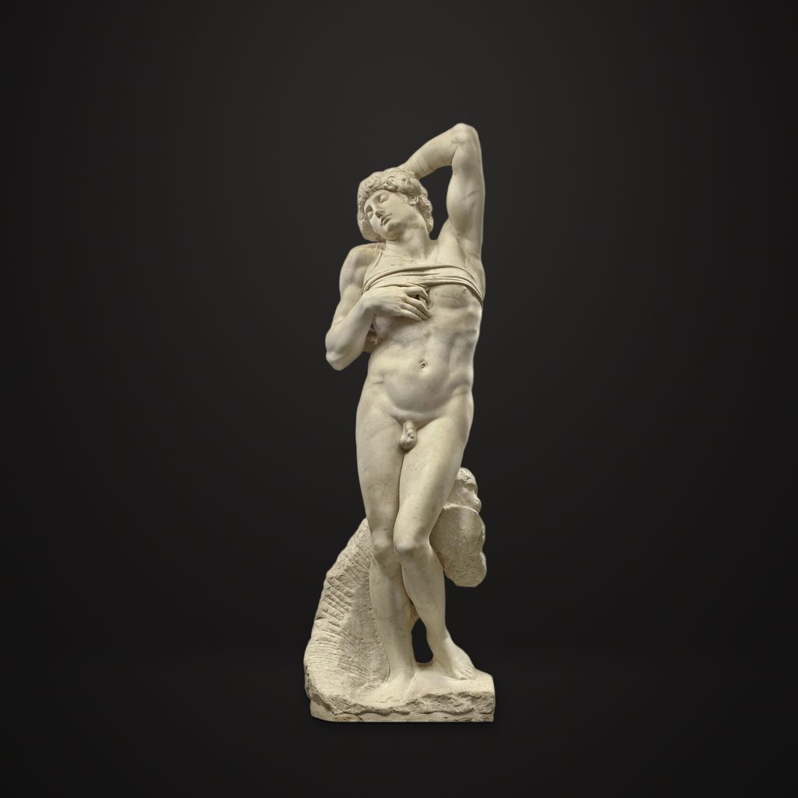

垂死的奴隸
米高安哲羅 · 1513—1515年
Esclave mourant
導賞節錄
呢個赤裸嘅後生仔合埋雙眼，個頭側向一邊。一隻手臂屈到腦後，另一隻手搭喺胸前。佢個身舒展開，一邊膝頭微微屈住，兩條腿錯開。一條窄帶橫過胸口，令你睇得出，佢係受住束縛嘅。
呢尊大理石像叫《垂死的奴隸》，係米高安哲羅喺一五一三年到一五一五年雕嘅，有兩米幾高。米高安哲羅係意大利文藝復興時期嘅大師，雕塑、繪畫同建築都精通。一五零八年到一五一二年，佢啱啱完成咗《西斯汀教堂天花畫》。
— 廣東話講稿 · Artvery
完整講解約 4 分鐘，可在 Artvery App 收聽。粵語、台灣普通話、內地普通話三種語音，館內對準作品即可識別播放。
即將登陸 App Store
App 即將推出，敬請期待。推出後免費下載，每座博物館單獨購買，一次購買永久使用。
作品資料
- 作者
- 米高安哲羅
- 年代
- 1513—1515年
- 尺寸
- 227.7 × 72.4 × 53.5 厘米
- 位置
- 羅浮宮 · 德農館（Denon）
- 館藏編號
- MR 1590; N 15044